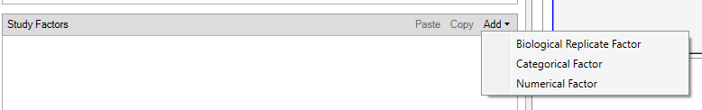
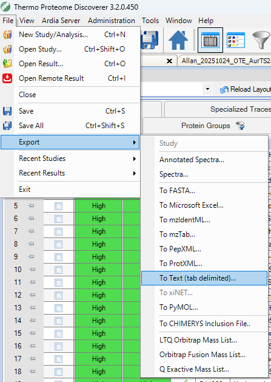
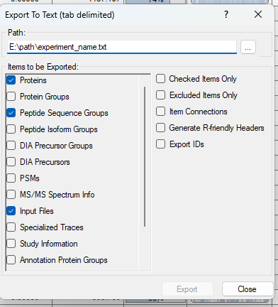

Tutorial 1: Importing Data
This tutorial shows how to import DIA-NN or Proteome Discoverer (PD) outputs into a pAnnData object.
scpviz currently supports:
- Proteome Discoverer (tested on versions 2.5 and 3.2)
- DIA-NN (tested on versions 1.8.1, 2.0, and 2.1)
pAnnData objects integrate protein and peptide level data:
- DIA-NN reports contain everything required.
- PD protein exports are required; peptide exports are optional but recommended for peptide-level filtering and analysis.
During import, missing values in .prot.var["Genes"] are filled from UniProt by default (fetch_uniprot=True). If you are offline or want to avoid API calls, pass fetch_uniprot=False; missing gene names stay as NA until you call pdata.update_missing_genes() later:
pdata = pAnnData.import_data(
source_type="diann",
report_file="diann_report.parquet",
obs_columns=obs_columns,
fetch_uniprot=False,
)
Encoding metadata
It’s important to encode metadata about samples (e.g., knockdown vs scrambled control) for downstream grouping, filtering, and visualization.
In DIA-NN, sample metadata should be encoded in the raw filenames. For example:
Split by _, the tokens become:
- date:
20251106 - user:
Caltech-Marion - mass spectrometer:
Astral - gradient length:
25min - column:
Aur25cm - sample condition + replicate:
KD-01
The .raw extension is automatically dropped during metadata parsing.
In Proteome Discoverer, metadata is encoded via categorical variables in the study design. Typical steps:
- Create a categorical variable (e.g.
sample_condition) on the study page. - Add possible values (e.g.
control,kd). - Assign values in the Samples tab.

Note
scpviz automatically detects and assigns a delimiter based on the most frequent character. If that fails, specify your own via the delimiter argument during import.
During import, scpviz checks filename token lengths and suggests .obs column names if they are uniform. If filenames contain multiple token lengths, they are grouped as parsingType = "10-tokens", "6-tokens", etc.
Loading DIA-NN reports
For DIA-NN, the report.parquet file is all you need. It includes peptide-level detail for each file, allowing scpviz to build the protein–peptide matrices.
from scpviz import pAnnData as pAnnData
obs_columns = ["user", "date", "ms", "acquisition", "faims", "column", "gradient", "amount", "region", "rep"]
pdata = pAnnData.import_data(
source_type="diann",
report_file="diann_report.parquet",
obs_columns=obs_columns,
)
🧭 [USER] Importing data of type [diann]
--------------------------
Starting import [DIA-NN]
Source file: diann_report.parquet
Number of files: 12
Proteins: 12652
Peptides: 251047
...
✅ [OK] pAnnData object is valid.
✅ [OK] Import complete. Use `print(pdata)` to view the object.
--------------------------
Loading Proteome Discoverer (PD) reports
Export requirements
For PD, we recommend modifying the export layout to include raw abundances (typically Abundances). The default layout is usually scaled abundance, which is not ideal for quantitative workflows. For convenience, here is a custom layout file that you can load into PD: pd_scpviz_layout.pdLayout
Proteome Discoverer allows export of specific tabs. We recommend exporting as tab-delimited text (Excel is supported but much larger in file size and thus slower to load).

Make sure to export at minimum the following tabs:
- Protein
- (optional, but recommended) Peptide Groups (PD2.5) or Peptide Sequence Groups (PD3.2)

Import
from scpviz import pAnnData as pAnnData
prot_file_path = "pd32_Proteins.txt"
pep_file_path = "pd32_PeptideSequenceGroups.txt"
obs_columns = ['sample', 'cellline', 'treatment', 'condition', 'day']
pdata = pAnnData.import_data(
source_type="pd",
prot_file=prot_file_path,
pep_file=pep_file_path,
obs_columns=obs_columns,
)
🧭 [USER] Importing data of type [pd]
--------------------------
Starting import [Proteome Discoverer]
Source file: pd32_Proteins.txt / pd32_PeptideSequenceGroups.txt
Number of files: 12
Proteins: 10393
Peptides: 167114
...
✅ [OK] pAnnData object is valid.
✅ [OK] Import complete. Use `print(pdata)` to view the object.
--------------------------
from scpviz import pAnnData as pAnnData
prot_file_path = "pd25_Proteins.txt"
pep_file_path = "pd25_PeptideGroups.txt"
obs_columns = ['sample', 'cellline', 'condition']
pdata = pAnnData.import_data(
source_type="pd",
prot_file=prot_file_path,
pep_file=pep_file_path,
obs_columns=obs_columns,
)
🧭 [USER] Importing data of type [pd]
--------------------------
Starting import [Proteome Discoverer]
Source file: pd25_Proteins.txt / pd25_PeptideGroups.txt
Number of files: 12
Proteins: 4988
Peptides: 30920
...
✅ [OK] pAnnData object is valid.
✅ [OK] Import complete. Use `print(pdata)` to view the object.
--------------------------
Note
PD uses global FDR (unlike DIA-NN, which provides per-precursor / per-protein FDR). This does not affect import but may influence downstream filtering decisions.
Gene name recovery
During import, scpviz automatically checks for proteins with missing gene names and queries UniProt to recover them.
ℹ️ 25 proteins with missing gene names.
🌐 [API] Querying UniProt for batch 1/1 (25 proteins) [fields: accession, gene_primary]
✅ Retrieved UniProt metadata for 25 entries.
✅ [OK] Recovered 24 gene name(s) from UniProt. Genes found:
TUFM, HDLBP, AMPD2, MYG1, HSD17B11, PCM1, NEFH, OXA1L, TRMT5, SLC4A1AP...
⚠️ [WARN] 1 gene name(s) still missing. Assigned as 'UNKNOWN_<accession>' for:
Q6ZSR9
💡 Tip: You can update these using `pdata.update_identifier_maps({'GENE': 'ACCESSION'}, on='protein', direction='reverse', overwrite=True)`
Proteins without gene names after UniProt lookup are assigned as UNKNOWN_<accession> and can be manually updated later if needed using pdata.update_identifier_maps().
Mapping accessions and peptides
After import, pAnnData stores three linked objects:
.prot— protein-level abundances (rows = samples, columns = accessions).pep— peptide-level abundances (rows = samples, columns = peptide IDs).rs— sparse protein × peptide relational matrix built during import
Use the RS matrix to translate between protein accessions and the peptides observed in your dataset. Both directions accept flexible inputs (accessions or gene names; peptide IDs or amino-acid strings).
Accession → peptides
get_peptides_for_accessions() returns a DataFrame with columns accession, peptide_id, and sequence.
# by UniProt accession
df = scutils.get_peptides_for_accessions(pdata, ["Q9CZW5"])
# by gene name
df = scutils.get_peptides_for_accessions(pdata, ["Tomm70"])
df.head()
By default, sequence is taken from .pep.var_names (sequence_from="index"):
| Source | .pep.var_names |
Default sequence column |
|---|---|---|
| Proteome Discoverer | Annotated sequence (+ optional modifications) | Same as peptide_id |
| DIA-NN | Precursor.Id |
Same as peptide_id (precursor ID, not amino acids) |
For DIA-NN, request amino-acid strings explicitly:
df = scutils.get_peptides_for_accessions(
pdata,
["Q9CZW5"],
sequence_from="Stripped.Sequence",
)
Unmatched accessions or genes are skipped with a warning; remaining matches are still returned.
Peptide → accessions
get_accessions_for_peptides() returns peptide_id, accession, and sequence. Inputs may be .pep.var_names or amino-acid strings (matched against Stripped.Sequence, Modified.Sequence, or Annotated Sequence).
pep_id = pdata.pep.var_names[0]
df = scutils.get_accessions_for_peptides(pdata, [pep_id])
seq = pdata.pep.var["Stripped.Sequence"].iloc[0]
df = scutils.get_accessions_for_peptides(
pdata,
[seq],
sequence_from="Stripped.Sequence",
)
Shared peptides linked to multiple proteins produce one row per accession. A single sequence string can also match multiple precursor IDs when several precursors share the same stripped sequence.
Round-trip check
acc = pdata.prot.var_names[0]
peps = scutils.get_peptides_for_accessions(pdata, [acc])
prots = scutils.get_accessions_for_peptides(pdata, [peps.iloc[0]["peptide_id"]])
assert acc in prots["accession"].values
Note
These functions require protein, peptide, and RS data (peptide import must be included). They inspect the RS matrix without modifying pdata. To filter by peptide support instead, see filter_rs() in the filtering tutorial.
Metadata parsing
Sample metadata (columns in .obs) can be inferred directly from filenames:
Updates to .summary are automatically pushed to .prot.obs and .pep.obs (if available). If scpviz can’t infer whether a change is intentional, you’ll be prompted to run pdata.update_summary().
When filenames follow a single format
If all filenames share the same number of tokens, scpviz will suggest obs_columns from the first filename and ask you to confirm or edit them. This is common for PD exports when filenames encode basic sample info.
🧭 [USER] Importing data of type [pd]
Auto-detecting ',' as delimiter from first filename.
ℹ️ Filenames are uniform. Using `suggest_obs_columns()` to recommend obs_columns...
From filename: Sample, AS, RA, kd, d7
Suggested .obs columns:
unknown?? : Sample
unknown?? : AS
unknown?? : RA
condition : kd
unknown?? : d7
Unrecognized token(s): ['Sample', 'AS', 'RA', 'd7']
Please manually label these.
ℹ️ Suggested obs:
obs_columns = ['<Sample?>', '<AS?>', '<RA?>', 'condition', '<d7?>']
⚠️ [WARN] Please review the suggested `obs_columns` above.
→ If acceptable, rerun `import_data(..., obs_columns=...)` with this list.
In this case, you should fill in obs_columns with meaningful labels and rerun the import. For example:
obs_columns = ["sample", "cellline", "treatment", "condition", "day"]
pdata = pAnnData.import_data(
source_type="pd",
prot_file=prot_file_path,
pep_file=pep_file_path,
obs_columns=obs_columns,
)
If filenames follow multiple formats, use parse_filename_index to handle different token lengths.
pdata.summary = scutils.parse_filename_index(
pdata.summary,
obs_columns=["date", "acquisition", "sample_id", "size", "confirmation", "thickness", "type", "organism", "region", "well_position"],
condition='parsingType == "10-tokens"',
)
pdata.summary = scutils.parse_filename_index(
pdata.summary,
obs_columns=["date", "sample_id", "size", "thickness", "organism", "region"],
condition='parsingType == "6-tokens"',
)
➡️ Next: Filtering and Normalization